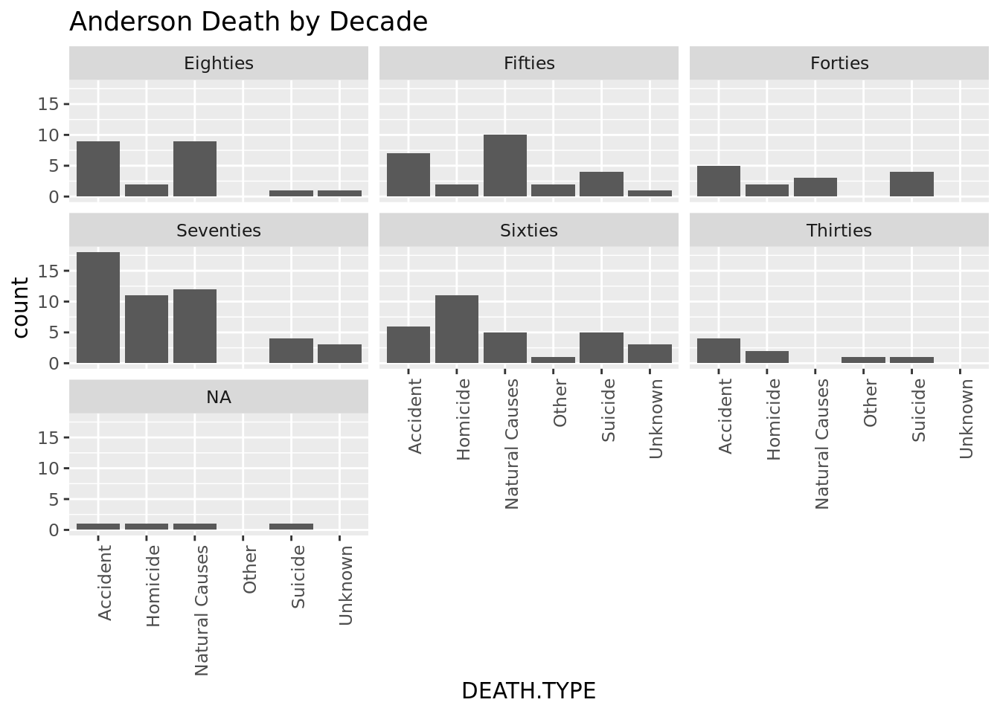

── Attaching core tidyverse packages ──────────────────────── tidyverse 2.0.0 ──
✔ dplyr 1.1.4 ✔ readr 2.1.5
✔ forcats 1.0.0 ✔ stringr 1.5.1
✔ ggplot2 3.5.0 ✔ tibble 3.2.1
✔ lubridate 1.9.3 ✔ tidyr 1.3.1
✔ purrr 1.0.2
── Conflicts ────────────────────────────────────────── tidyverse_conflicts() ──
✖ dplyr::filter() masks stats::filter()
✖ dplyr::lag() masks stats::lag()
ℹ Use the conflicted package (<http://conflicted.r-lib.org/>) to force all conflicts to become errors
library(readtext)library(tm)
Loading required package: NLP
Attaching package: 'NLP'
The following object is masked from 'package:ggplot2':
annotate
Stephen Berry in his 2022 book, Count The Dead, addresses the rise of the modern state and its correlation with the quantification of death. During the legislative session of 1849 a tremendous reform was passed through the United States Congress, almost by accident. As the last bill before the session adjourned for the year it received almost no review and was passed as speedily as possible.
The reform was the newly appointed U.S. Census Chair’s, Joseph C. G. Kennedy, implementation of a census questionnaire to be administered by federal agents traveling throughout the country. The questionnaire contained six schedules, the second was to record information on the enslaved persons living on a property including their names and place of birth. While Congress, especially those from southern states, beat the life out of Schedule 2, what they failed to act on was Schedule 3 which contained the questions to be asked about who had died on a property over the preceding year and what had caused their death. So, the first mortality census was born. (Berry, Count The Dead, 18-21)
The CSI:Dixie project produced by eHistory at the University of Georgia is based on coroners reports in the South primarily from the 19th century. Ten county datasets from South Carolina counties have been created to date. In this project, I begin by examining the Greenville County dataset to understand the implications of the information from the coroners’ inquests and then expand my focus to include Anderson, Chesterfield and Horry counties in order to examine regional similarities and differences. Through this examination the impact of the early economic development of these counties resulting in regional variances on public health becomes apparent.
#load CSI:Dixie Greenville County dataCSI.GVL <-read.csv("https://docs.google.com/spreadsheets/d/e/2PACX-1vQzO3uN1w0-A_rN3bHuBWDr1iQe9hPZ68u7igu-I8wWDEpHSWH5T3AQFPvaa-VMSbuB8Z8X5wxSjmA6/pub?output=csv")
#tidy dataCSI.GVL.TIDY <- CSI.GVL %>%separate(NAME, c("FIRST.NAME", "LAST.NAME"), sep =" ", remove =FALSE) %>%#separates first and last namesseparate(DATE, c("MONTH", "DAY", "YEAR"), sep =" ", remove =FALSE) #separates dates into month, day, year
Greenville County was officially created in 1786. The land ceded from the Cherokee Nation after the Revolutionary War as well as lands confiscated from Loyalists became available for sale through the land grant office and was quickly bought up by newly independent Americans eager to reproduce the agricultural wealth of the lowcountry of South Carolina. The 1820s brought tremendous change as infrastructure became the focus of Greenville and so much of the state and nation as a whole. The State Road project was funded, connecting Greenville to Columbia and Charleston, as well as many bridge, ferry crossing and canal projects.
As South Carolina moved toward the middle of the 19th century, political strife began to characterize much of its residents’ interactions. Duels between white men were very often threatened, and (less often) occurred along the riverbanks and in old fields throughout the county. Despite the political turmoil of Nullification and Secession, industry continued to develop. The fast moving rivers coming out of the mountains were well suited to mill creation and the wealthy men able to purchase large tracts of land prized areas that lent themselves to diversified economic pursuits.
Until the beginning of the Civil War Greenville’s most important commodity was its location at the base of the Appalachians. The drover trade coming from Tennessee and Kentucky with livestock and other goods had a sophisticated network for alerting the livestock yards and merchants selling food and rest of their impending arrival. From the coast, the elite Charlestonians and lowcounty residents flocked to Greenville every summer to escape the disease and heat of the coast.
With the federal census reforms in 1850 there is an immediate impact on the data available in Greenville County. Coroner inquests increased dramatically from 1850 through the end of the 1880s, with the 1870s and 80s having the highest occurrences by a significant margin.
#chart Greenville by yearyear.count <- CSI.GVL.TIDY %>%group_by(YEAR) %>%summarize(count =n())ggplot(year.count, aes(x = YEAR, y = count)) +geom_point(aes(size = count)) +theme(axis.text.x=element_text(angle=90,hjust=1)) +labs (title ="Greenville Inquests by Year")
The most obvious explanation is that some types of death increases would necessarily correspond with the Civil War. For example, the homicide and suicide rates during the 1850s and 60s are the highest compared to all other decades. What is interesting, however, is that the types of death that would seem as if there would not be a tremendous fluctuation due to war (ie: accidents and natural causes) also see a large spike during these decades. Of the accidents in Greenville that contain a description in the CSI:Dixie data almost all are related to vehicles such as wagons and trains.
#Greenville deaths by type by yearby.year <- CSI.GVL.TIDY %>%group_by(YEAR, DEATH.TYPE) %>%summarize(count =n())
`summarise()` has grouped output by 'YEAR'. You can override using the
`.groups` argument.
ggplot(by.year, aes(x = DEATH.TYPE, y = count)) +theme(axis.text.x=element_text(angle=90,hjust=1)) +geom_col() +facet_wrap(~YEAR) +labs(title ="Greenville Death Type by Year")
#group by decade - create a new dataframe by decade and average death types over years within that decade"by.decade <- CSI.GVL.TIDY %>%mutate(DECADE =if_else(YEAR >=1800& YEAR <1810, "Aughts",if_else(YEAR >=1810& YEAR <1820, "Tens",if_else(YEAR >=1820& YEAR <1830, "Twenties",if_else(YEAR >=1830& YEAR <1840, "Thirties",if_else(YEAR >=1840& YEAR <1850, "Forties",if_else(YEAR >=1850& YEAR <1860, "Fifties",if_else(YEAR >=1860& YEAR <1870, "Sixties",if_else(YEAR >=1870& YEAR <1880, "Seventies",if_else(YEAR >=1880& YEAR <1890, "Eighties",if_else(YEAR >=1890& YEAR <1900, "Nineties", "Other"))))))))))) %>%as_tibble()
#chart DEATH.TYPE by DECADEdecade.count <- by.decade %>%group_by(DECADE, DEATH.TYPE) %>%summarize(count =n())
`summarise()` has grouped output by 'DECADE'. You can override using the
`.groups` argument.
ggplot(decade.count, aes(DEATH.TYPE, count)) +theme(axis.text.x=element_text(angle=90,hjust=1)) +geom_col() +facet_wrap(~DECADE) +labs(title ="Greenville Death by Decade")
In addition to the mode of death, the inquest data gives insight into the people dying in Greenville. It’s important to notice what information is not included, especially for black South Carolinians.
NAME FIRST.NAME LAST.NAME DECEASED.DESCRIPTION
1 David Garison David Garison
2 black child black child black child
3 John Pedeu[Peden?] John Pedeu[Peden?]
4 Elizabeth Pinnel Elizabeth Pinnel
5 Samuel Bates Samuel Bates
6 negro woman slave negro woman negro woman slave
DATE MONTH DAY YEAR INQUEST.LOCATION
1 February 23, 1823 February 23, 1823 [?] the house of David Garison
2 July 31, 1849 July 31, 1849 at Morton's old place
3 February 11, 1851 February 11, 1851 at the house of John S. Pedeu[?]
4 February 27, 1851 February 27, 1851 at the late residence of Elizabeth Pinnel
5 July 9, 1851 July 9, 1851 at McBride's Hotel
6 July 12, 1851 July 12, 1851 at Jackson Pattison's
DEATH.TYPE DEATH.METHOD COUNTY AGE
1 Accident Greenville adult
2 Homicide Greenville child
3 Homicide rifle Greenville adult
4 Natural Causes Greenville adult
5 Suicide laudanum Greenville adult
6 Homicide Greenville adult
#adds sorting by race to dataframe previously sorted by ageall.sorted <- age.sorted %>%mutate(RACE =if_else(str_detect(DECEASED.DESCRIPTION, "black"), "black",if_else(str_detect(DECEASED.DESCRIPTION, "negro"), "black",if_else(str_detect(DECEASED.DESCRIPTION, "negroe"), "black", if_else(str_detect(DECEASED.DESCRIPTION, "colored"), "black",if_else(str_detect(DECEASED.DESCRIPTION, "free"), "black",if_else(str_detect(DECEASED.DESCRIPTION, "slave"), "black", "white")))))))head(all.sorted)
NAME FIRST.NAME LAST.NAME DECEASED.DESCRIPTION
1 David Garison David Garison
2 black child black child black child
3 John Pedeu[Peden?] John Pedeu[Peden?]
4 Elizabeth Pinnel Elizabeth Pinnel
5 Samuel Bates Samuel Bates
6 negro woman slave negro woman negro woman slave
DATE MONTH DAY YEAR INQUEST.LOCATION
1 February 23, 1823 February 23, 1823 [?] the house of David Garison
2 July 31, 1849 July 31, 1849 at Morton's old place
3 February 11, 1851 February 11, 1851 at the house of John S. Pedeu[?]
4 February 27, 1851 February 27, 1851 at the late residence of Elizabeth Pinnel
5 July 9, 1851 July 9, 1851 at McBride's Hotel
6 July 12, 1851 July 12, 1851 at Jackson Pattison's
DEATH.TYPE DEATH.METHOD COUNTY AGE RACE
1 Accident Greenville adult white
2 Homicide Greenville child black
3 Homicide rifle Greenville adult white
4 Natural Causes Greenville adult white
5 Suicide laudanum Greenville adult white
6 Homicide Greenville adult black
In examining the coroners inquest from Greenville County it is clear that this practice of refusing to name or further identify black individuals trickled down from the highest governmental offices to the local levels. It is also clear that infants and children of undetermined race were often not named in the inquests.
Comparing the overall trends of the Greenville dataset with those from Anderson, Horry and Chesterfield provide additional insights. I chose these in an attempt to understand what regional differences account for the variation in numbers of inquests? If, as Berry claims, you can judge the effectiveness of government by the health of its citizens, what forces account for the variances in the recorded deaths across South Carolina during the 19th century? Also, Anderson’s dataset is very similar in size to Greenville, whereas Horry County is the smallest and Chesterfield is one of the largest so they provide a representative sample.
CSI:Anderson
Anderson County follows a very similar development pattern to Greenville after the Revolutionary War. Population expansion in the early 1800s caused the larger Pendleton District to be divided into Anderson and Pickens Districts. Like Greenville, Anderson is primarily agricultural with a healthy industrial economy due to the establishment of mills.
#load Anderson County dataCSI.ANDERSON <-read.csv("https://docs.google.com/spreadsheets/d/e/2PACX-1vSZ5lXF7WTLe71GUg6Z_h6HgtoeQJ6BX1JQ7H6IgkGvrXSqzxIh720ElLPeWmzoXytW2O9J7bgL82Kg/pub?output=csv")
CSI.ANDERSON.TIDY <- CSI.ANDERSON %>%separate(NAME, c("FIRST.NAME", "LAST.NAME"), sep =" ", remove =FALSE) %>%#separates first and last namesseparate(DATE, c("MONTH", "DAY", "YEAR"), sep =" ", remove =FALSE) #separates dates into month, day, year
Warning: Expected 3 pieces. Missing pieces filled with `NA` in 4 rows [13, 116, 125,
130].
#chart Anderson by year countyear.count.anderson <- CSI.ANDERSON.TIDY %>%group_by(YEAR) %>%summarize(count =n())ggplot(year.count.anderson, aes(x = YEAR, y = count)) +geom_point(aes(size = count)) +theme(axis.text.x=element_text(angle=90,hjust=1)) +labs (title ="Anderson Inquests by Year")
#group by decade - create a new dataframe by decade and average death types over years within that decade"by.decade.anderson <- CSI.ANDERSON.TIDY %>%mutate(DECADE =if_else(YEAR >=1800& YEAR <1810, "Aughts",if_else(YEAR >=1810& YEAR <1820, "Tens",if_else(YEAR >=1820& YEAR <1830, "Twenties",if_else(YEAR >=1830& YEAR <1840, "Thirties",if_else(YEAR >=1840& YEAR <1850, "Forties",if_else(YEAR >=1850& YEAR <1860, "Fifties",if_else(YEAR >=1860& YEAR <1870, "Sixties",if_else(YEAR >=1870& YEAR <1880, "Seventies",if_else(YEAR >=1880& YEAR <1890, "Eighties",if_else(YEAR >=1890& YEAR <1900, "Nineties", "Other"))))))))))) %>%as_tibble()
#chart Anderson by DEATH.TYPEdeath.type.anderson <- CSI.ANDERSON.TIDY %>%group_by(DEATH.TYPE) %>%summarize(count =n())ggplot(death.type.anderson, aes(x = DEATH.TYPE, y = count)) +geom_col() +labs (title ="Anderson Death Type Ranked")
#chart DEATH.TYPE by DECADEdecade.count.anderson <- by.decade.anderson %>%group_by(DECADE, DEATH.TYPE) %>%summarize(count =n())
`summarise()` has grouped output by 'DECADE'. You can override using the
`.groups` argument.
ggplot(decade.count.anderson, aes(DEATH.TYPE, count)) +theme(axis.text.x=element_text(angle=90,hjust=1)) +geom_col() +facet_wrap(~DECADE) +labs (title ="Anderson Death by Decade")

CSI:Chesterfield
Chesterfield County lies on the South Carolina fall zone and shares a border with North Carolina. It was organized and its courthouse built in 1785. The advent of the steamboat linked Chesterfield with North Carolina and Winyah Bay in Georgetown, South Carolina and brought rapid prosperity in the 1820s when it became a stopover town on the Pee Dee River. Its economy still remained largely rural and agricultural until after the Civil War and the arrival of the railroads connecting its pine barren timber to outside markets. It experienced a 55% increase in population during the 1880’s leading up to its highest inquest count in 1894. For its true inquest high point in the 1950’s, though, there was no corresponding population spike.
#load Chesterfield County dataCSI.CHESTERFIELD <-read.csv("https://docs.google.com/spreadsheets/d/e/2PACX-1vSiyRbp_NP79e2pOWCwtrQRUFbZ0HrPkPI4XiR5qcREiRhq2ifqJGh0oKWSaB19GPgb2_Z5pzEOo6PN/pub?output=csv")
CSI.CHESTERFIELD.TIDY <- CSI.CHESTERFIELD %>%separate(NAME, c("FIRST.NAME", "LAST.NAME"), sep =" ", remove =FALSE) %>%#separates first and last namesseparate(DATE, c("MONTH", "DAY", "YEAR"), sep =" ", remove =FALSE) #separates dates into month, day, year
Warning: Expected 2 pieces. Missing pieces filled with `NA` in 4 rows [216, 298, 468,
498].
Warning: Expected 3 pieces. Missing pieces filled with `NA` in 8 rows [232, 233, 269,
341, 410, 479, 482, 498].
#chart Chesterfield by year countyear.count.chesterfield <- CSI.CHESTERFIELD.TIDY %>%group_by(YEAR) %>%summarize(count =n())ggplot(year.count.chesterfield, aes(x = YEAR, y = count)) +geom_point(aes(size = count)) +theme(axis.text.x=element_text(angle=90,hjust=1, size=5)) +labs (title ="Chesterfield Inquests by Year")
#group by decade - create a new dataframe by decade and average death types over years within that decade"by.decade.chesterfield <- CSI.CHESTERFIELD.TIDY %>%mutate(DECADE =if_else(YEAR >=1800& YEAR <1810, "Aughts",if_else(YEAR >=1810& YEAR <1820, "Tens",if_else(YEAR >=1820& YEAR <1830, "Twenties",if_else(YEAR >=1830& YEAR <1840, "Thirties",if_else(YEAR >=1840& YEAR <1850, "Forties",if_else(YEAR >=1850& YEAR <1860, "Fifties",if_else(YEAR >=1860& YEAR <1870, "Sixties",if_else(YEAR >=1870& YEAR <1880, "Seventies",if_else(YEAR >=1880& YEAR <1890, "Eighties",if_else(YEAR >=1890& YEAR <1900, "Nineties", "Other"))))))))))) %>%as_tibble()
#chart Chesterfield by DEATH.TYPEdeath.type.chesterfield <- CSI.CHESTERFIELD.TIDY %>%group_by(DEATH.TYPE) %>%summarize(count =n())ggplot(death.type.chesterfield, aes(x = DEATH.TYPE, y = count)) +geom_col() +labs (title ="Chesterfield Death Type Ranked")
`summarise()` has grouped output by 'DECADE'. You can override using the
`.groups` argument.
ggplot(decade.count.chesterfield, aes(DEATH.TYPE, count)) +theme(axis.text.x=element_text(angle=90,hjust=1)) +geom_col() +facet_wrap(~DECADE) +labs (title ="Chesterfield Death by Decade")
CSI:Horry
Horry County is the location of present day Myrtle Beach, South Carolina. The site of the first European settlement site in Winyah Bay in the 1530’s, its development through the colonial period was marked by its isolation. It did not develop into a coastal hub like Charleston and Beaufort because its low-lying swampy land made it less suitable for indigo and rice cultivation as well as its separation from the west and south by the Pee Dee Swamp. Its sparse population and isolation continued the Revolutionary War and into the antebellum period. Horry County experienced a 33% population boom in 1850 with a corresponding increase in the black enslaved population, but the black population always stayed significantly lower than the white. Small farm agriculture dominated the economy of Horry County through the antebellum period, but industries such as mills were much higher by comparison to much of the state.
#load Horry County dataCSI.HORRY <-read.csv("https://docs.google.com/spreadsheets/d/e/2PACX-1vQLbn85PImxeinLSgyS-CXgm3uPgp663HrzzVLeqYPa40QIaWWADQcbnhZBKR7MSHHzNFPk9PWdrBrh/pub?output=csv")
CSI.HORRY.TIDY <- CSI.HORRY %>%separate(NAME, c("FIRST.NAME", "LAST.NAME"), sep =" ", remove =FALSE) %>%#separates first and last namesseparate(DATE, c("MONTH", "DAY", "YEAR"), sep =" ", remove =FALSE) #separates dates into month, day, year
#chart Horry by year countyear.count.horry <- CSI.HORRY.TIDY %>%group_by(YEAR) %>%summarize(count =n())ggplot(year.count.horry, aes(x = YEAR, y = count)) +geom_point(aes(size = count)) +theme(axis.text.x=element_text(angle=90,hjust=1)) +labs (title ="Horry Inquests by Year")
#group by decade - create a new dataframe by decade and average death types over years within that decade"by.decade.horry <- CSI.HORRY.TIDY %>%arrange(YEAR) %>%mutate(DECADE =if_else(YEAR >=1800& YEAR <1810, "Aughts",if_else(YEAR >=1810& YEAR <1820, "Tens",if_else(YEAR >=1820& YEAR <1830, "Twenties",if_else(YEAR >=1830& YEAR <1840, "Thirties",if_else(YEAR >=1840& YEAR <1850, "Forties",if_else(YEAR >=1850& YEAR <1860, "Fifties",if_else(YEAR >=1860& YEAR <1870, "Sixties",if_else(YEAR >=1870& YEAR <1880, "Seventies",if_else(YEAR >=1880& YEAR <1890, "Eighties",if_else(YEAR >=1890& YEAR <1900, "Nineties", "Other"))))))))))) %>%as_tibble()
#chart Horry by DEATH.TYPEdeath.type.horry <- CSI.HORRY.TIDY %>%group_by(DEATH.TYPE) %>%summarize(count =n())ggplot(death.type.horry, aes(x = DEATH.TYPE, y = count)) +geom_col() +labs (title ="Horry Death Ranked")
`summarise()` has grouped output by 'DECADE'. You can override using the
`.groups` argument.
ggplot(decade.count.horry, aes(DEATH.TYPE, count)) +theme(axis.text.x=element_text(angle=90,hjust=1)) +geom_col() +facet_wrap(~DECADE) +labs (title ="Horry Death by Decade")
As points of comparison emerge from the data it is important to remember the two contributing factors to the recorded data gleaned from the coroners inquests. First, the state of public health that the inquests represent. Many cultural realities affect which people and deaths were examined by a coroner in 19th century South Carolina. For example, a woman who died during childbirth would most likely not have warranted a coroner’s report. Second, how recent the advent of the recording of death was in the 19th century. The mortality census is the first time that the United States attempted to keep track of the people and mode of death of its residents. Berry argues that the ability to quantify death, although flawed, contributed to the doubling of the life expectancy between 1850-1950.
#combines all tidy datasets for Greenville, Chesterfield, Anderson and Horry Counties. The reason I chose these three to compare to Greenville is geographical (from other areas of the state) and well as number of records available (Anderson is similar in size to Greenville, Chesterfield is one of the largest datasets and Horry the smallest)COMBINED_CSI_TIDY <-rbind(CSI.GVL.TIDY, CSI.ANDERSON.TIDY, CSI.CHESTERFIELD.TIDY, CSI.HORRY.TIDY)
#shows the year with the largest number of inquests from each countyhighest.year <- COMBINED_CSI_TIDY %>%group_by(COUNTY, YEAR) %>%summarize(count =n()) %>%slice_max(count)
`summarise()` has grouped output by 'COUNTY'. You can override using the
`.groups` argument.
highest.year
# A tibble: 4 × 3
# Groups: COUNTY [4]
COUNTY YEAR count
<chr> <chr> <int>
1 Anderson 1876 16
2 Chesterfield 1934 21
3 Greenville 1880 15
4 Horry 1857 6
#limit the highest year to the 1800s - this is to adjust for Chesterfield being the only county with data into the 1900s as well as being the largest datasethighest.year.filtered <- COMBINED_CSI_TIDY %>%group_by(COUNTY, YEAR) %>%summarize(count =n()) %>%filter(YEAR <1900) %>%slice_max(count)
`summarise()` has grouped output by 'COUNTY'. You can override using the
`.groups` argument.
highest.year.filtered
# A tibble: 4 × 3
# Groups: COUNTY [4]
COUNTY YEAR count
<chr> <chr> <int>
1 Anderson 1876 16
2 Chesterfield 1894 17
3 Greenville 1880 15
4 Horry 1857 6
Horry County saw its highest number of inquests in 1857 listing homicide as the cause of death. Anderson in 1876 with a majority of accidents, Greenville in 1880 with accidents and natural causes even, and Chesterfield County did not record its highest number until 1934 with natural causes listed as the leading cause of death. Horry, Anderson and Greenville follow the trend of the increase in inquests after the federal reform of 1850, but Chesterfield’s peak is almost a half century late. Even when limiting the data to the 19th century, Chesterfield’s highest year is 1894.
By more closely examining the individual records of the highest cause of death in the most documented decade in each county patterns begin to emerge especially around the treatment of black South Carolinians:
Of the nine homicides between 1850-59, 2 were recorded by only a first name most likely indicating an African American individual.
#List all Horry County deaths in 1850-59 with death type descendinghorry.fifties <- by.decade.horry %>%filter(DECADE =="Fifties") %>%select(NAME, DECEASED.DESCRIPTION, DEATH.TYPE) %>%arrange(DEATH.TYPE)horry.fifties
# A tibble: 19 × 3
NAME DECEASED.DESCRIPTION DEATH.TYPE
<chr> <chr> <chr>
1 W. H. Gordon "" Accident
2 unknown negro "unknown negro" Accident
3 Wilson M. Gilligan "" Accident
4 Hollan "" Accident
5 Fanny "" Accident
6 Titus "" Accident
7 Jethro "" Accident
8 Jack "" Homicide
9 William Milligan "" Homicide
10 John Rhodes "" Homicide
11 Edward Faircloth "" Homicide
12 Jim "" Homicide
13 Irving Stallings "" Homicide
14 Elizabeth M. Skipper "" Homicide
15 Michael Pertell "" Homicide
16 Enoch Stevens "" Homicide
17 unnamed infant "unnamed infant" Natural Causes
18 Silvia "" Natural Causes
19 Martha G. Herring "" Unknown
Of the eighteen accident related deaths in Anderson from 1870-79 only two are listed without first and last names. One is “Smith” and another is referred to only as “colored”. Of note, one of the individual listed is John Calhoun Clemson, Thomas Green and Anna Clemson’s son. He was killed in a railway accident near Seneca.
#List all Anderon County deaths in 1870-79 with death type descendinganderson.seventies <- by.decade.anderson %>%filter(DECADE =="Seventies") %>%select(NAME, DECEASED.DESCRIPTION, DEATH.TYPE) %>%arrange(DEATH.TYPE)anderson.seventies
# A tibble: 48 × 3
NAME DECEASED.DESCRIPTION DEATH.TYPE
<chr> <chr> <chr>
1 Allen Johnson "" Accident
2 colored "colored" Accident
3 Eli David Junkins "" Accident
4 George Hammond "" Accident
5 Henry Thompson "" Accident
6 James Jenkins "" Accident
7 Jefferson Kitsinger "" Accident
8 John Calhoun Clemson "" Accident
9 Lena Hutchinson "" Accident
10 M. J. Wilson "" Accident
# ℹ 38 more rows
There are thirteen accidents tied to a coroner’s report in the 1880’s in Greenville. There are none listed without surnames, but Julius Brockman is described as a black boy by in the CSI:Dixie data. The thirteen deaths described as natural causes are all recorded as first and last names.
#List all Greenville County deaths in 1880-89 with death type descendinggreenville.eighties <- by.decade %>%filter(DECADE =="Eighties") %>%select(NAME, DECEASED.DESCRIPTION, DEATH.TYPE) %>%arrange(DEATH.TYPE)greenville.eighties
# A tibble: 42 × 3
NAME DECEASED.DESCRIPTION DEATH.TYPE
<chr> <chr> <chr>
1 Stephen Yeargin "" Accident
2 infant female "infant female" Accident
3 George Martin "" Accident
4 R. Davis "" Accident
5 Julius Brockman "negroe boy" Accident
6 Rosa Blasingame "" Accident
7 John Lyons "" Accident
8 Zilpha Fisher "" Accident
9 Pressly Foster "boy" Accident
10 Pauline Abraham "child" Accident
# ℹ 32 more rows
Lastly, there are 58 deaths listed as natural causes in Chesterfield in the 1890’s. None of the deaths are listed with surnames or described as an African American individual.
#List all Chesterfield County deaths in 1890-99 with death type descendingchesterfield.nineties <- by.decade.chesterfield %>%filter(DECADE =="Nineties") %>%select(NAME, DECEASED.DESCRIPTION, DEATH.TYPE) %>%arrange(DEATH.TYPE)chesterfield.nineties
# A tibble: 93 × 3
NAME DECEASED.DESCRIPTION DEATH.TYPE
<chr> <chr> <chr>
1 Augusta Sullivan "" Accident
2 Austin Dunlap "" Accident
3 Beatrice McGuine "" Accident
4 Ben F. Williams "" Accident
5 Charity Goldplate "" Accident
6 Chas McQueen "" Accident
7 Duncan Fleming "" Accident
8 Edmond Long "" Accident
9 Emanuel Courtney "" Accident
10 Eva Tucker "" Accident
# ℹ 83 more rows
Conclusion
Although there is a great deal to be learned from assembling the coroner inquests that remain from the 19th century in South Carolina, in limiting my focus to a few counties that represent the different regions of that state it seems clear to me that the deaths directly coincide with the economies of these regions. Accidents and natural causes are the leading causes of death in Greenville, Anderson and Chesterfield during their peak decades of recorded coroner inquests. Accidents, especially industrial and vehicle accidents, are the top listed causes of death in the Piedmont region in the 1870-80s. This directly corresponds to the years after the Civil War and the rebuilding of a more industrialized economy. The natural deaths in Chesterfield in the 1890s speaks to the lack of industry and rural nature of that region, especially after the devastation of the Civil War. Horry County is a bit of an outlier, but again, examining its early economic development the rate of homicides during the 1850s and the relatively high percentage of black deaths, this can be seen through the lens of plantation economics as well as the slave uprisings in the days leading up to Civil War.
Bibliography
Berry, Stephen. Count the Dead: Coroners, Quants, and the Birth of Death As We Know It. Chapel Hill, North Carolina: University of North Carolina Press, 2022.
Edgar, Walter. South Carolina: A History. Columbia, S.C.: University of South Carolina Press, 1999.
Huff Jr., Archie Vernon. Greenville: The History of the City and County in the South Carolina Piedmont. Columbia, S.C.: University of South Carolina Press, 1995.
Lewis, Catherine H. Horry County, South Carolina, 1730-1993. Columbia, S.C.: University of South Carolina Press, 1998.